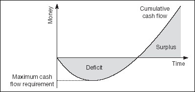

If you are with me up to here, and have produced your own estimates of revenues and costs, you have all the figures needed to produce your own cash flow projections. As you will already have spotted, there are two ways to do this.
You can extract the figures which involve exchanges of hard cash. This will generate a table similar to Fig. 16.1, although yours will be at a greater level of detail and have more rows.
Or you can take your forecast of net profit and reverse out the non-cash transactions.
The first method is so straightforward that I will leave it up to you. The second is slightly more complex, so I will cover it here. Essentially, go through your projected balance sheet and identify all the entries that relate to operations, financing and investments. Then build a spreadsheet which starts with net profit and lists the balance sheet changes. Add in a couple of totals and you have a cash flow projection similar to that in Fig. 16.3.
It is instructive to chart the bottom line, cumulative cash flow, as shown in Fig. 16.4. This is the liquidity bottom line, which for managers is every bit as important as net profit – perhaps more so. For simplicity the sample curve is unrealistically smooth. Yours will bump up and down, reflecting seasonal pressures and other leads and lags between action and results. Remember that it charts the net changes in cash flow in each period. You need to allow for peaks and troughs during each month, quarter, etc. In other words, the figures here show the movements from month to month. For operational purposes, you will also need daily cash flow forecasts as discussed in Chapter 8.

Cumulative cash flow presents a quandary for entrepreneurs and for managers who are responsible for the enterprise and business units. If there is a surplus, how do you use it? The answer is not necessarily obvious. If there is a deficit, how do you cover it? We will return to this in Chapter 19.
If you are appraising someone’s plan, question carefully the cash flow and the underlying assumptions. I have known executives who have deliberately massaged cash flow forecasts to make them look acceptable. Then, when the actual results were worse than ‘expected’, they went back to the management executive committee and asked for more – knowing that the boss would have to give them the money that would not have been approved at the outset. Genuine errors can happen. But deliberate cheating such as this suggests incompetence on both sides, and it usually ends in tears.